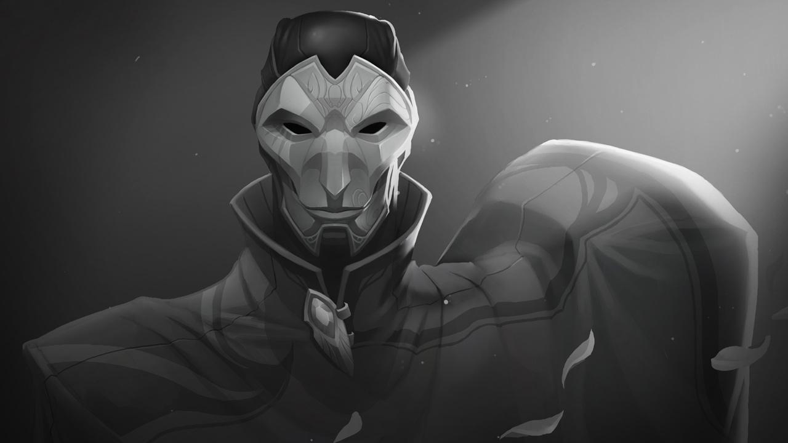

艺术需要相当程度的……残忍。
作为一名心思缜密的癫狂杀手，烬坚信谋杀是一门艺术。他曾在艾欧尼亚的监狱中服刑，但却因为执政议会里涌动着的暗流而得到释放，成为了权术斗争所利用的刺客。烬将手中的枪当成画笔，尽情地挥洒他所追求的残忍艺术，让受害者肝胆俱裂，令旁观者震悚难平。他在自己制作的阴森剧目里肆意取乐，让“恐怖”二字有了最合适不过的，使者。
长年以来，臭名昭著的“金魔”一直肆虐在艾欧尼亚的南部山区。在芝云行省当地，这个怪物杀害了成群结队的旅行者，有时甚至会摧毁整片农庄，只留下扭曲支离的尸体。武装民兵搜遍了丛林，各地城镇雇来了恶魔猎人，无极大师们巡逻在每一条大道上——但是怪物的暴行丝毫没有收敛。
万般绝望之下，芝云议会派出了一位特使，前去寻访苦说大师，请求他的帮助。听罢特使的求告后，苦说编造了一个借口，解释自己为什么不能出手。但一周之后，大师本人带着自己的儿子慎，还有他最钟爱的弟子戒（注：叛出师门前，劫的名字为戒），打扮成游商的模样，进入了芝云境内。他们暗中走访了无数惨遭袭击的受害家庭，详细探查了阴森的罪案现场，寻找每一丝与凶手可能有关的线索与痕迹。
整整四年的漫长调查，让这三个男人都变了许多。苦说大师一头显赫的红发已然转白;一向以机智幽默著称的慎变得不苟言笑;而苦说大殿中的明星弟子戒，也开始挣扎于自己所参悟的学问。当他们最终确定了一条指向谋杀的线索时，大师却说了这样一番话：“善与恶，并不确实。两者起自人心，见影之道不同而已。”
在后世诸多剧目与史诗的描绘中，“金魔”的落网可称得上是苦说大师第七桩，也是最后一桩轰动世人的丰功伟绩。湛春节的前夜，苦说大师伪装成一位知名的书法家，混在许多艺术家之中来到了吉雍道。很多人都觉得只有邪灵才能犯下那些非人的罪行，然而苦说大师却意识到凶手不过是一个普通人而已——人们口中所说的“金魔”，其实只是一个芝云境内巡回的剧团中的舞台管理员，名叫卡达·烬。
当他们抓住烬的时候，年轻气盛的戒走上前来，想要杀掉这个瑟缩的男人，但是苦说大师制止了他。尽管烬的恶行遭人痛恨，德高望重的大师仍然决定留下他的性命，把他送进了吐冷监狱。慎虽然反对，但他也接受了父亲丝毫不带个人情感的理性判断。但是戒却无法理解和接受这样慈悲的安排。多年以来，他的眼前无时不萦绕着那些残虐的谋杀场景。据说，这就是他心中恨意萌发的起源。
虽然在吐冷监狱度过了许多年岁，羞涩而有礼的卡达·烬并没有吐露太多东西——哪怕是他自己的真名。但在服刑期间，僧侣们却注意到他在很多方面都表现出极高的学习天赋，包括铸铁、诗歌和舞蹈等等。即便如此，守卫和僧侣们仍然无法劝化他心中那份病态般的痴迷。
而在监狱之外，艾欧尼亚的政局因为诺克萨斯帝国的入侵而动荡不安。这个宁静国度所深藏着的嗜血渴望被战争唤醒了。蠢蠢欲动的阴谋家，以及为权力而生的秘密社党纷纷露头，让苦说大师全力维护的和平与均衡由内而外瓦解殆尽。为了与忍者与无极剑客们的力量抗衡，统治议会内部的某个阴谋集团释放了烬，以期将其变作自己手中的恐怖武器。
现在，当他掌握了来自喀舒利兵工厂的新式武器、近乎无限的资金时，卡达·烬开始把自己所谓的“演出”提升到新的高度。他的作品见诸众多国外的高官显贵，还有艾欧尼亚的地下政治团体。但是，一个极其渴望获得关注的连环杀手，愿意在阴影中默默无闻多久呢?